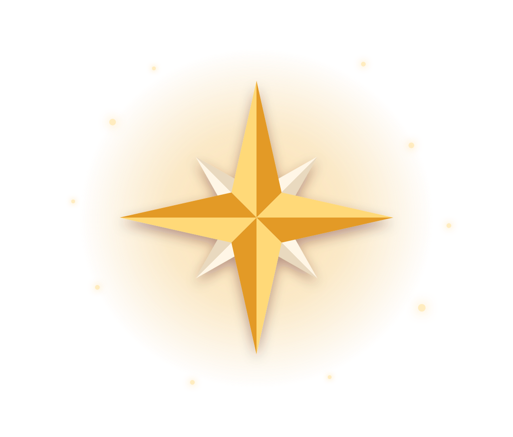

K
A
V
I
S
STUDY

{{_t.k601}}
{{_t.k2441}}
{{src.heroSub}}
{{_t.k1784}}
{{_t.k211}}
{{_t.k276}}
{{_t.k663}}
{{_t.k285}}
{{_t.k1293}}
{{_t.k1601}}
{{_t.k893}}
{{_t.k1044}}
{{_t.k490}}
{{_t.k1904}}
{{_t.k721}}
{{att.tag}}
{{att.name}}
{{att.meta}}
{{_t.k1284}}
{{att.course}}
{{_t.k2351}}
· {{att.why}}
{{att.confirmL}}
{{_t.k475}}
{{att.doneL}}
{{pickTitle}}
{{_t.k2458}}
{{k.t}}
{{k.s}}
{{_t.k710}}
{{k.t}}
{{k.s}}
{{selName}}
{{_t.k807}}
{{_t.k1291}}
{{m.l}}
{{_t.k1108}}
{{k.t}}
{{k.t}}
{{k.s}}
{{selName}}
{{_t.k2252}}
{{toastMsg}}